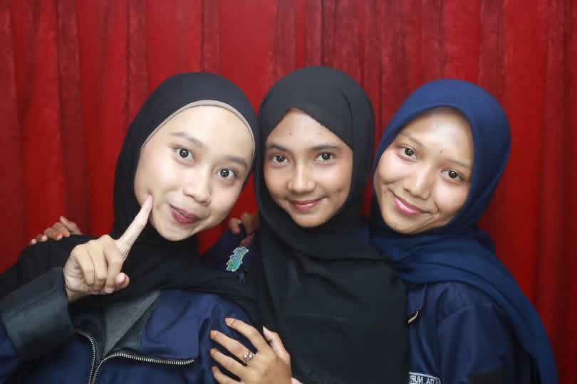
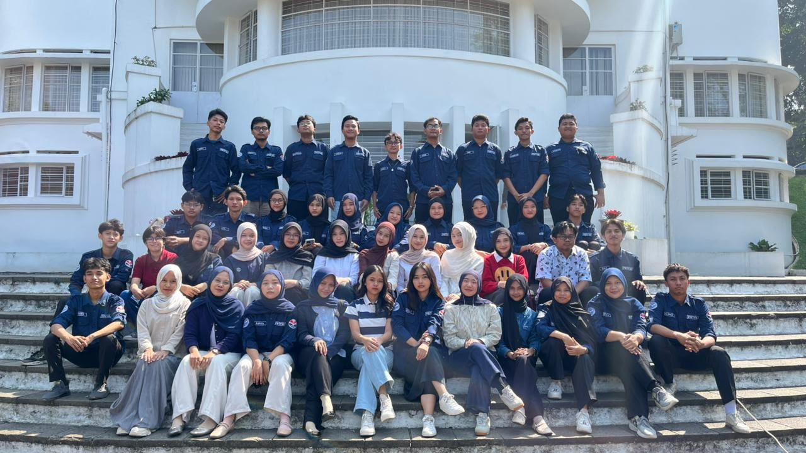
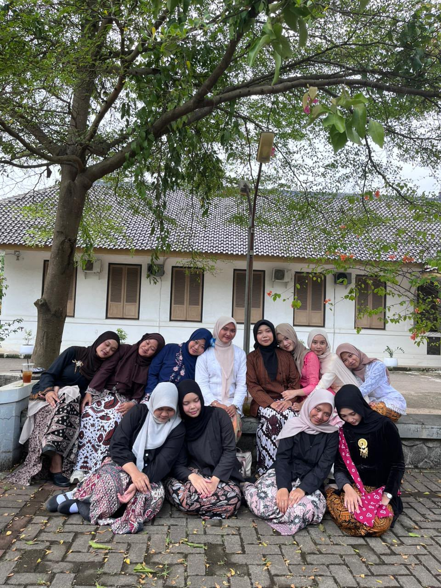
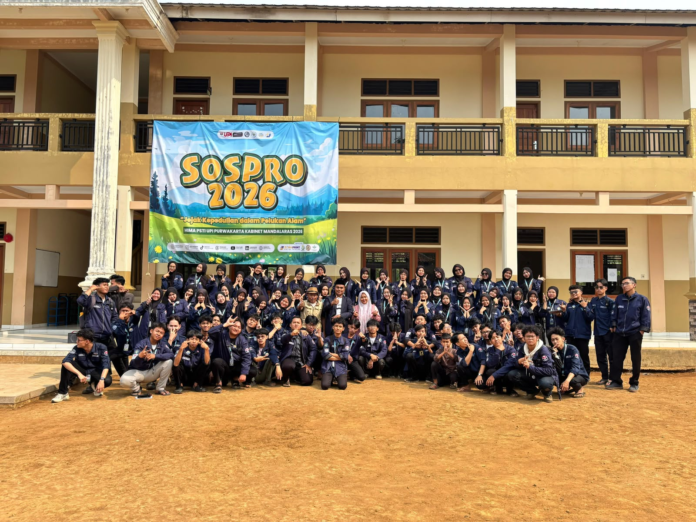

Sedikit hal kecil dari perjalanan ku ini, yang nantinya bakal jadi memories masa kuliah.

🫶🏻 My bestie gue, tempat cerita, ketawa, random bareng, dan pastinya banyak cerita seru lainnya. 🫶🏻

🚀 UPI goes to UPI Bandung, perjalanan kecil tapi banyak cerita seru dan pengalaman baru. 🚀

💃 Cewe-cewe kue, cantik-cantik tapi tetep rusuh kalau udah bareng. Banyak ketawa dan banyak cerita. 💃

🔥 Komisi 2 gacorr, keep solid terus! Semoga tetap kompak dan selalu seru kalau udah bareng. 🔥

✨ Menjadi sponsor dan pengamatan yang seru, banyak pengalaman, cerita baru, dan hal-hal kecil yang bikin masa kuliah jadi lebih berwarna. ✨
🌷 Setiap foto punya cerita, dan setiap cerita punya memories-nya sendiri. 🌷